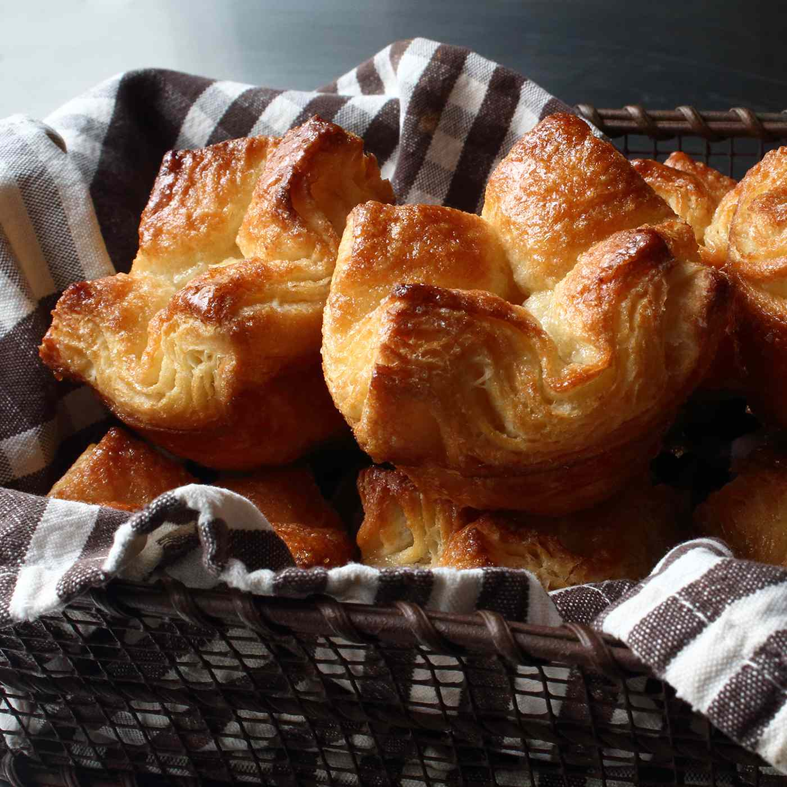

Kouign Amanns
Golden caramelized pastries that will warm your heart.
This buttery, flaky, decident dessert is dish loved by many.
In the Breton language, Kouign means 'brioche' or 'cake' and Amann translates to 'butter'.
The beautiful golden puff pastry is laminated to perfection.
This irresistable treat cures heartbreak and makes puppies smile.
A sweet and salty combination that will leave you wanting more, more, and more!
Ingredients
Kouign-Amann
- Dough
- 1 cup of warm water.
- 1 tablespoon of white sugar.
- 1 tablespoon of active dry yeast.
- 2 ½ cups bread flour.
- 2 tablespoons of melted butter.
- 1 teaspoon of kosher salt.
- 2 sticks of ice-cold unsalted butter.
Seasoned Sugar
- ⅔ cup white sugar.
- 2 teaspoons of sea salt.
Steps
- Combine water, sugar, and yeast in a large bowl. Let rest until foamy, about 5 minutes.
- Add 2 cups flour, 1 tablespoon melted butter, and salt to yeast mixture.
- Dust work surface with remaining 1/2 cup flour. Turn dough out onto the floured surface. Knead, folding in excess flour as needed, until dough is soft, slightly sticky, place into a greased bowl, cover, and let rise in a warm place until doubled in volume, about 1 1/2 hours.
- Make seasoned sugar: Mix together sugar and most of the sea salt in a bowl. Taste and add remaining salt if desired.
- Grease a 12-cup muffin tin with remaining 1 tablespoon melted butter. Spoon some of the seasoned sugar into each cup and shake to coat. Turn tin over and return excess sugar to the bowl. Set the muffin tin aside until needed.
- Transfer dough onto a floured surface and press into a rough rectangle. Roll dough into a rectangle about 1/8- to 1/4-inch thick. Grate 1 stick ice-cold butter over dough, leaving a 1-inch border. Flatten butter using lightly floured hands. Fold rectangle widthwise into thirds. Press gently to square out the edges, then place onto a silicone-lined baking sheet. Wrap in plastic and refrigerate for 30 minutes.
- Roll dough into a large rectangle again, pulling and stretching the corners as needed. Grate remaining stick ice-cold butter over the surface. Pat down with floured fingers and fold into thirds. Roll back out into a rectangle and fold into thirds. Repeat rolling and folding one more time. Wrap in plastic and refrigerate for at least 1 hour.
- Preheat the oven to 375 degrees F (190 degrees C).
- Sprinkle a generous amount of seasoned sugar onto your work surface. Place dough onto sugar and sprinkle more sugar on top. Roll into a large rectangle about 1/8- to 1/4-inch thick, turning and topping with sugar between rolls.
- Use a pizza cutter to trim away uneven edges. Cut dough into 12 equal squares. Sprinkle more sugar on top. Lightly pinch each pastry into a crown shape by bringing all four corners to the center; place into the prepared muffin cups. Sprinkle more sugar on top. Let rest for 10 minutes.
- Bake in the preheated oven until browned and puffed, 25 to 30 minutes. Transfer pastries to a cooling rack while still hot. Let cool for 15 minutes before serving.
- Tender, caramelized, and ready to eat!